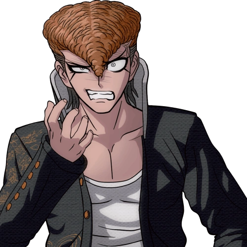
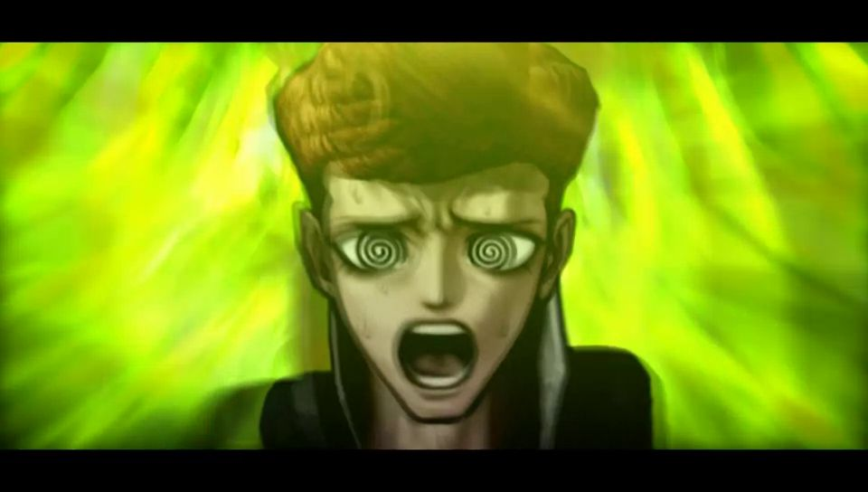

Mondo Owada
Aviso de spoilers: Esta ficha incluye el destino del personaje en Danganronpa: Trigger Happy Havoc.
Datos
- Nombre japonés
- 大和田 紋土
- Talento
- Líder de pandilla motorista definitivo
- Rol
- Estudiante
- Cumpleaños
- 9 de junio
- Grupo sanguíneo
- AB
- Altura
- 187 cm
Gustos
Le gusta
- Las motocicletas
No le gusta
- Romper una promesa
Descripción
El líder de una banda de motoristas, conocido por su temperamento y su lealtad.

Destino
- Estado
- Muere
- Capítulo
- 2
- Papel final
- Culpable

Más información en la página de Mondo Owada en Danganronpa Fandom (se abre en una pestaña nueva). Volver al catálogo.